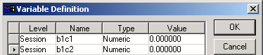
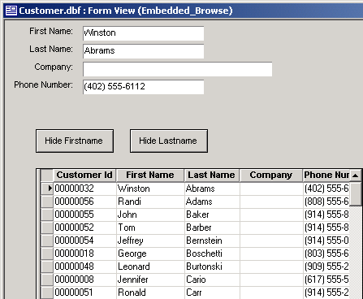
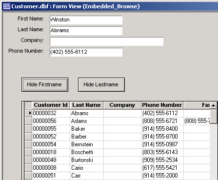
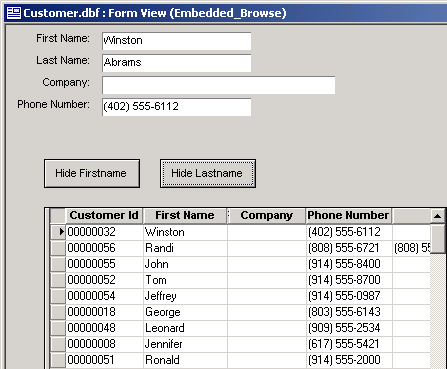

Selectively Hiding Browse Columns
If you want to interactively change the columns that appear in an embedded browse, you can selectively change column widths to zero. To start with, we define two session variables.

A script attached to the OnInit event of the form captures the widths of the first_name and last_name columns into b1c1 and b1c2.
|
b1c1 = Topparent:Browse1:first_name.object.width b1c2 = Topparent:Browse1:last_name.object.width |
The following shows the original unmodified form.

A script attached to the OnPush event of the Hide Firstname button sets the width of the first_name column to zero and restores the width of the last_name column.
|
Topparent:Browse1:first_name.object.width = 0 Topparent:Browse1:last_name.object.width = b1c2 |

A second script attached to the OnPush event of the Hide Lastname button sets the width of the last_name column to zero and restores the width of the first_name column.
|
Topparent:Browse1:last_name.object.width = 0 Topparent:Browse1:first_name.object.width = b1c1 |

See Also